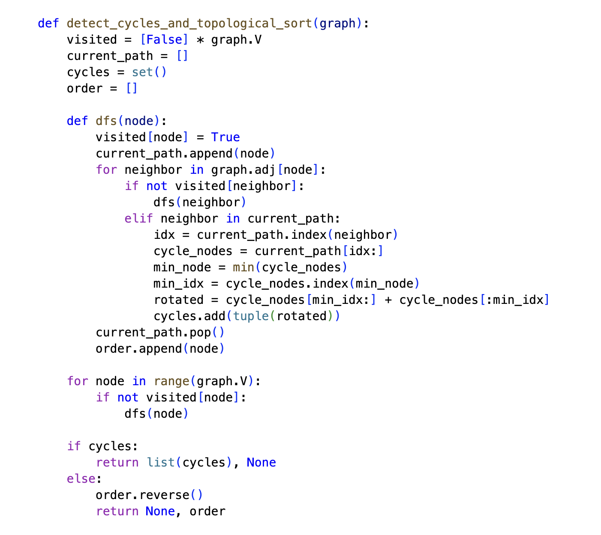
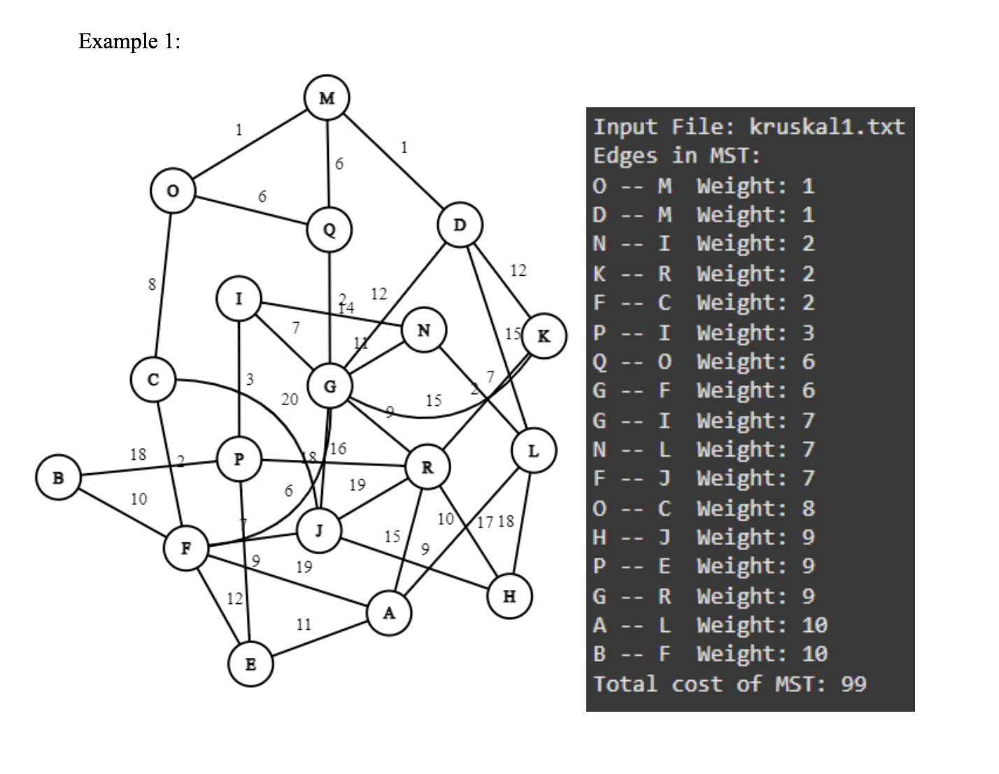

Graph algorithms and related data structures
In this project three graph algorithms are implemented which include: Single-Source Shortest Path, Minimum Spanning Tree using Kruskal’s algorithm and Depth-First Search with topological sorting and cycle detection. The implemented algorithms are applied to both directed and undirected graphs, where we find the shortest paths, MST and detect cycles respectively. These algorithms are implemented on five graphs further providing the results and visualizations.
Project Overview
The project demonstrates a practical graph algorithm workflow: building graph structures, choosing the right algorithm for the problem, and verifying results with example graph data. It covers both weighted and unweighted graphs, directed and undirected graphs, and the common operations needed for graph traversal and analysis.
Implemented Algorithms
- Single-Source Shortest Path — Dijkstra’s Algorithm with a priority queue to compute shortest paths from a source node.
- Minimum Spanning Tree — Kruskal’s Algorithm with Union-Find to build the MST for undirected graphs.
- Depth-First Search — DFS traversal used for topological sorting and cycle detection in directed graphs.
Results and Visualizations
The implementation includes results for five sample graphs, showing shortest path distances, computed MST edges, and cycle detection outcomes. Visualizations are created using Python plotting to make graph structure, traversal, and algorithm behavior easier to interpret.
Tech Stack
Python, Jupyter Notebook, Graph Algorithms, Dijkstra’s Algorithm, Kruskal’s Algorithm, DFS, Priority Queue, Union-Find
Example Screenshots

Depth-first search traversal and topological sorting visualization.

Directed graph cycle detection and analysis results.